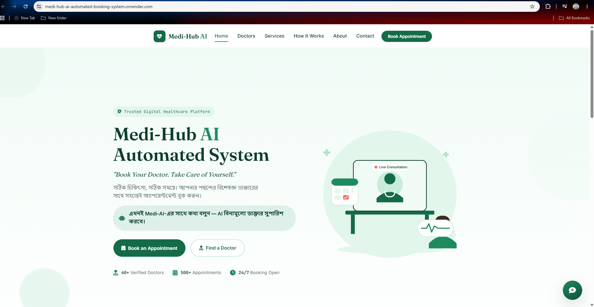
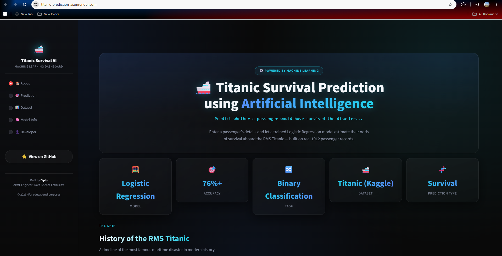
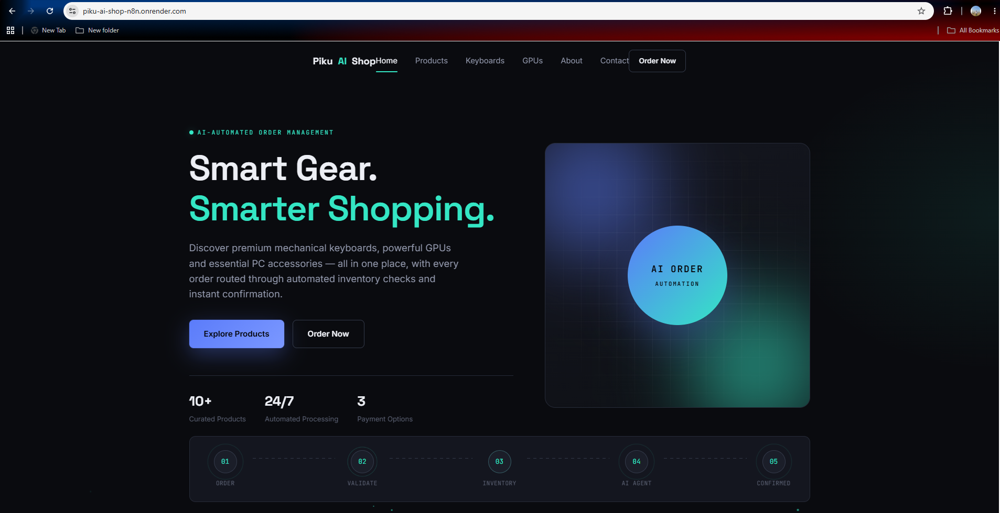

Dipto Howlader Prethul
AI / Machine Learning Engineer
I build with a focus on Deep Learning, Automation, and useful software products.
about me
Turning ambitious ideas into useful systems.
I’m a final-year Computer Science & Engineering student at Uttara University, Bangladesh. I enjoy taking ideas from a trained model or a rough workflow and shaping them into something people can actually use.
My work sits at the intersection of AI engineering, product-minded development, and automation. I’m currently deepening my understanding of neural networks while building practical applications with Python, FastAPI, Streamlit, and n8n.
More about my journey ↗featured work
A few things I've shipped

Medi-Hub
AI-automated healthcare booking system built on n8n — chatbot triage, Sheets logging, auto email confirmation.
Live demo ↗
Titanic Survival Prediction
A classic ML classification model taken from notebook to a live, deployed application.
Live demo ↗
Piku AI-Shop
An AI-powered e-commerce experience designed for smooth product discovery and a modern shopping flow.
Live demo ↗right now
What I'm focused on
Deep Learning
Going deeper into neural network theory and training mechanics behind the models I've deployed.
Automation
Building more advanced, production-grade n8n workflows and API-driven pipelines.